library(sdmpredictors)
library(raster)
library(tidyverse)
library(MultiscaleDTM)
library(terra)A guide to developing non-hierarchical habitat classifications using open-source data and software: Accessing the data
An introduction to this document
This document was developed as part of a pipeline to assist delegates of the ‘Habitat Conservation and Marine Spatial Planning’ workshop at the Deep Ocean Collective Solution Accelerator Meeting (Scripps Institution of Oceanography 2-5th October 2023) in developing regional benthic habitat classifications. The pipeline mirrors that used in McQuaid et al. (2023).
The repository is designed to be downloaded as a zip folder and for the scripts to be run sequentially (steps 1 to 3) in the same R Studio session. This document is not designed to provide a thorough background in the theory of non-hierarchical habitat classification, nor the variable selection process. For this, we recommend reading Howell (2010) or the abovementioned McQuaid et al. (2023).
Should you notice any issues with the code or have any questions, please contact Dr Amelia Bridges at the University of Plymouth amelia.bridges@plymouth.ac.uk.
Prepare your folder structure & working environment
Ensuring consistent structures/naming conventions conventions for folder and files is a good data management practice and will save you time (and headaches!) in the future.
Your working directory (wd) should be the folder you’ve downloaded from this GitHub repository where the .Rproj file is located. You can check this by running getwd().
getwd()wd<-getwd()You’ll notice there are other subfolders so for ease, let’s create paths to them too.
raw_input_layers_folder<-paste0(wd, "/InputLayers/Unprocessed")
clust_input_layers_folder<-paste0(wd, "/InputLayers")
output_layers_folder<-paste0(wd, "/OutputLayers")
results_folder<-paste0(wd, "/Results")my_plot_theme <- function(...){
ggplot2::theme_light()+
ggplot2::theme(axis.line = ggplot2::element_line(colour = "grey50"),
axis.title.y = ggplot2::element_text(face="bold", angle=90),
axis.title.x = ggplot2::element_text(face="bold"),
panel.border = element_rect(colour = "black", fill=NA, linewidth=1),
plot.title = ggplot2::element_text(size=14,hjust=0.5),
legend.text.align = 0.5,
legend.title.align = 0,
axis.title = ggplot2::element_text(size=14,vjust=0.5),
axis.text.x = ggplot2::element_text(size = 12,
colour = "black"),
axis.text.y = ggplot2::element_text(colour = "black",
size = 12),
...)
}Read in the data
Topography
In an ideal world, we would have a global layer of substrate type given it’s known importance as a driver of community structure. Unfortunately, no such layer currently exists, and therefore we make use of proxies from topography.
In McQuaid et al. (2023), we used three topographic variables to create our ‘topography layer’ - these were slope, fine-scale bathymetric position index (FBPI) and broad-scale (BBPI).
These variables are derivatives of bathymetry (i.e. they can be calculated from bathymetry).
bathy<-raster(paste0(raw_input_layers_folder, "/GEBCO2020_Depth_10km_WGS84.tif"))You’ll notice that the rasters I’m bringing in are named in similar ways. I use a naming convention that ensures I know the source (the GEBCO 2020 grid), variable (depth), resolution (10km) and projection (WGS84), without having to open the file. When working in R, calling the object (in this case ‘bathy’) also allows us to quickly look at the details including what coordinate reference system (crs) it’s in.
bathyclass : RasterLayer
dimensions : 2161, 4320, 9335520 (nrow, ncol, ncell)
resolution : 0.08333333, 0.08333333 (x, y)
extent : -180, 180, -90, 90.08333 (xmin, xmax, ymin, ymax)
crs : +proj=longlat +datum=WGS84 +no_defs
source : GEBCO2020_Depth_10km_WGS84.tif
names : GEBCO2020_Depth_10km_WGS84
values : -10848, 0 (min, max)As per the above, our bathymetry raster is in WGS84. To calculate the bathymetric derivatives we want, we need our bathymetry in an equal-area projection where all cells on the grid are the same size.
There are hundreds of equal-area projections to choose from but we’re going to use Mollweide - this page explains it’s limitations and advantages nicely. The proj4string for Mollweide is ‘+proj=moll +lon_0=0 +x_0=0 +y_0=0 +datum=WGS84’.
molproj<-"+proj=moll +lon_0=0 +x_0=0 +y_0=0 +datum=WGS84"
bathy_MOL<-projectRaster(bathy, crs=molproj, res=c(10000,10000))
plot(bathy_MOL, main="Bathymetry (Mollweide)")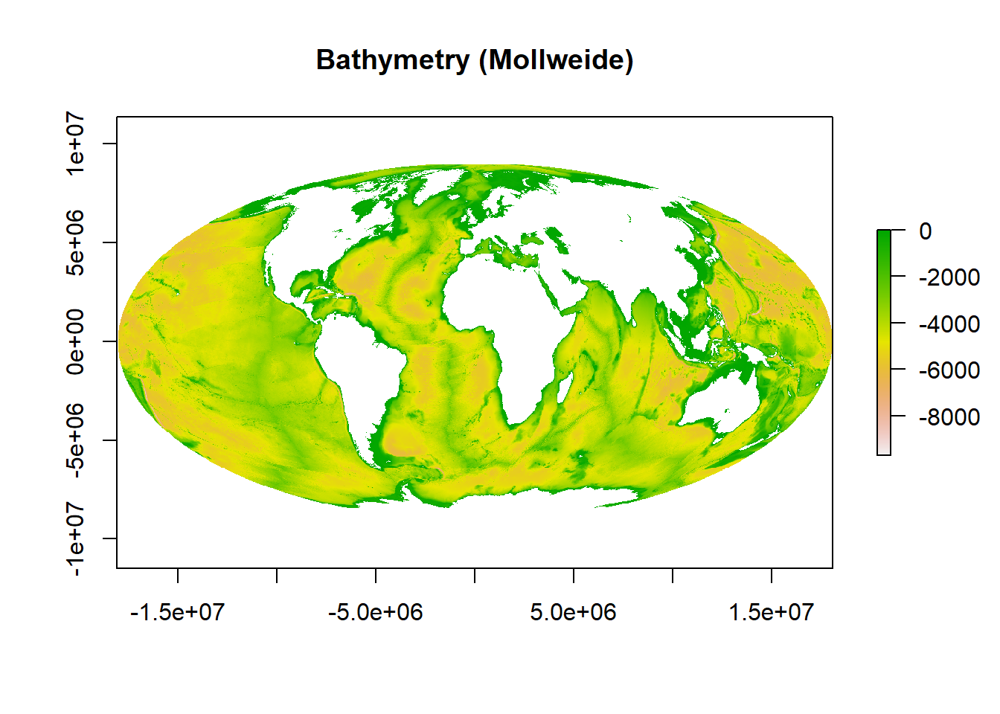
You can see from the map that this is in the Mollweide projection as opposed to the WGS84 version below.
plot(bathy, main="Bathymetry (WGS84)")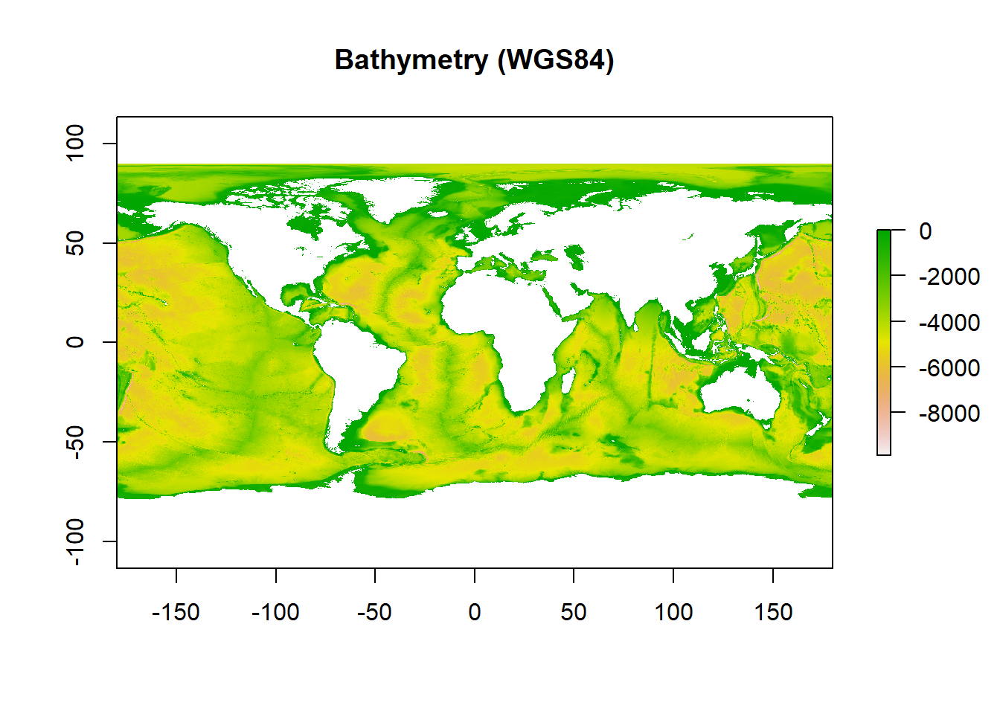
Now we have out bathymetry data read in and in the correct projection, we need to calculate slope, FBPI and BBPI and we do this using the MultiscaleDTM package described in Ilich et al. (2023).
Slope
Slope refers to the steepness or inclination of the seabed surface at a particular location. It quantifies how much the elevation of the seabed changes over a horizontal distance and is often measured in degrees. Slope is a useful topographic variable in this instance as it can be interpreted as a surrogate for hydrodynamic properties such as current velocity which in turn can be used to model substrate type and grain size (biologically relevant variables). For example, steep slopes are often washed by fast currents that strip away light sediment, exposing hard substrate.
slo<-SlpAsp(bathy_MOL, w=c(3,3), unit="degrees", method="queen", metrics="slope")
sloclass : RasterLayer
dimensions : 1802, 3618, 6519636 (nrow, ncol, ncell)
resolution : 10000, 10000 (x, y)
extent : -18089740, 18090260, -9073049, 8946951 (xmin, xmax, ymin, ymax)
crs : +proj=moll +lon_0=0 +x_0=0 +y_0=0 +datum=WGS84 +units=m +no_defs
source : memory
names : slope
values : 0, 18.44445 (min, max)This raster is in Mollweide but we want to make our classification in WGS84 - this is because in marine spatial planning, WGS84 is more commonly used.
wgsproj<-"+proj=longlat +datum=WGS84 +no_defs"
slo<-projectRaster(slo, bathy, crs=wgsproj)R is brilliant for quickly automating tasks, but it’s still really important for us to ‘eyeball’ our data and ensure the input variables look correct. This is where expert opinion and knowing your study area is crucial.
plot(slo, main="Slope")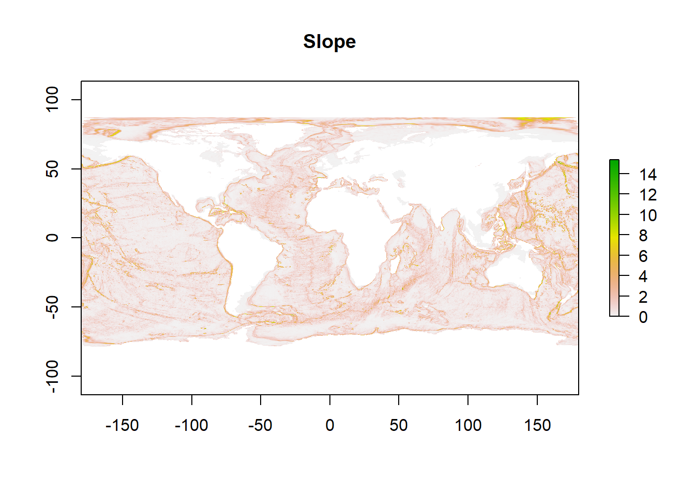
These values and the plot look as one would expect for a global slope map, with large ridge systems identified as well as flat abyssal plains.
Given the aim of this workshop is to provide skills in developing regional habitat classifications, we’re going to clip our rasters and work in the Gulf of Guinea. If we plot this clip, we see our slope values for our region of interest.
gog_shp<-terra::vect(paste0(clust_input_layers_folder, "/Gulf_of_Guinea.shp"))
slo<-terra::rast(slo) # we convert into a SpatRaster format for the crop() function
slo<-crop(slo, gog_shp)Note, whilst I made the Gulf of Guinea shapefile, there are plenty of R packages that contain national shapefiles.
plot(slo, main="Slope: Gulf of Guinea")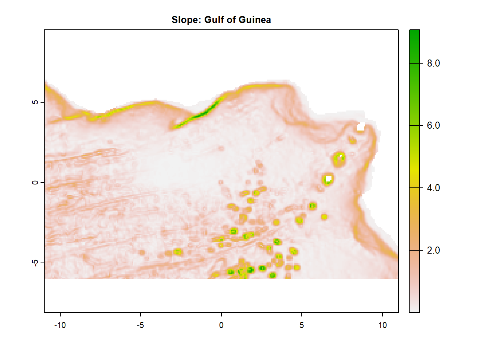
Let’s save the output.
slo<-raster(slo) # we convert into a SpatRaster format for the crop() function
terra::writeRaster(slo, filename=(paste0(raw_input_layers_folder, "/GEBCO2020_GoG_Slo_10km_WGS84.tif")), overwrite=TRUE, format="GTiff")Broad-scale bathymetric position index (BBPI)
Bathymetric position index refers to the elevation of a focal point (i.e. grid cell) in relation to the overall landscape (i.e. surrounding grid cells), where positive values represent raised areas and negative values are depressions. Relative height of the seabed is important as it can act as another surrogate for current velocity and substrate. Depending on the scale factor used, bathymetric position indices can be used to identify habitats over different scales such as meso- and megahabitats.
Scale factor is calculated by by multiplying the grid resolution (in this case 10 km) by the outer radius you specify when calculating. For this example, we’ll use the following values:
- FBPI: inner = 1, outer = 2
- 2 x 10 km = 20 km; identifying habitats at the tens of km scale
- BBPI: inner: 1, outer = 10
- 10 x 10 km = 100 km; identifying habitats at the hundreds of km scale
Note: the values of BPI are relative and not comparable across tools (e.g. if you make your layer in Arc versus R, there will likely be differences).
specs<-annulus_window(c(1,10), "cell")
bbpi<-MultiscaleDTM::BPI(bathy_MOL, w = specs, unit = "cell", na.rm = TRUE)
bbpiclass : RasterLayer
dimensions : 1802, 3618, 6519636 (nrow, ncol, ncell)
resolution : 10000, 10000 (x, y)
extent : -18089740, 18090260, -9073049, 8946951 (xmin, xmax, ymin, ymax)
crs : +proj=moll +lon_0=0 +x_0=0 +y_0=0 +datum=WGS84 +units=m +no_defs
source : memory
names : bpi
values : -4455.167, 5074.362 (min, max)The values look sensible.
bbpi<-projectRaster(bbpi, bathy, crs=wgsproj)
bbpi<-terra::rast(bbpi) # we convert into a SpatRaster format for the crop() function
bbpi<-crop(bbpi, gog_shp)plot(bbpi, main="BBPI: Gulf of Guinea")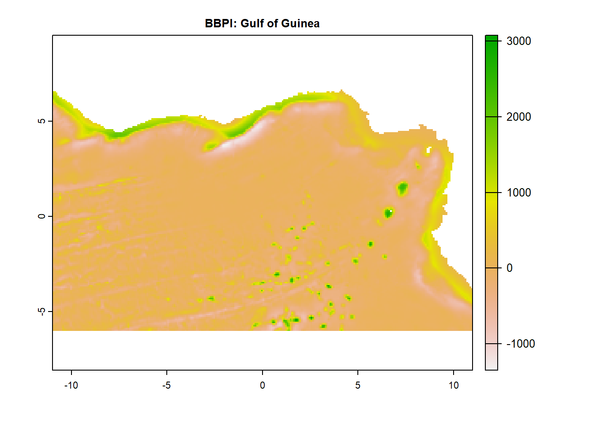
And so does the plot so we’ll save the layer.
bbpi<-raster(bbpi) #
terra::writeRaster(bbpi, filename=(paste0(raw_input_layers_folder, "/GEBCO2020_GoG_BBPI_10km_WGS84.tif")), overwrite=TRUE, format="GTiff")Fine-scale bathymetric position index (FBPI)
See blurb above for FBPI description.
specs<-annulus_window(c(1,2), "cell")
fbpi<-MultiscaleDTM::BPI(bathy_MOL, w = specs, unit = "cell", na.rm = TRUE)
fbpiclass : RasterLayer
dimensions : 1802, 3618, 6519636 (nrow, ncol, ncell)
resolution : 10000, 10000 (x, y)
extent : -18089740, 18090260, -9073049, 8946951 (xmin, xmax, ymin, ymax)
crs : +proj=moll +lon_0=0 +x_0=0 +y_0=0 +datum=WGS84 +units=m +no_defs
source : memory
names : bpi
values : -3248.836, 3691.62 (min, max)The values look sensible.
fbpi<-projectRaster(fbpi, bathy, crs=wgsproj)
fbpi<-terra::rast(fbpi) # we convert into a SpatRaster format for the crop() function
fbpi<-crop(fbpi, gog_shp)plot(fbpi, main="FBPI: Gulf of Guinea")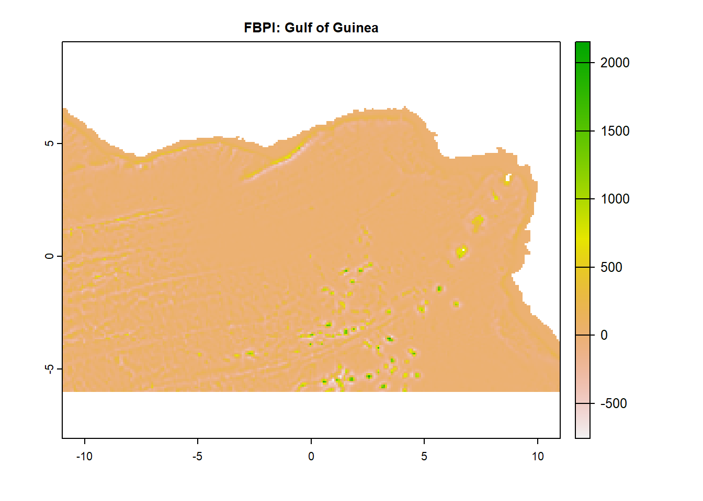
And so does the plot so we’ll save the layer.
fbpi<-raster(fbpi) #
terra::writeRaster(fbpi, filename=(paste0(raw_input_layers_folder, "/GEBCO2020_GoG_FBPI_10km_WGS84.tif")), overwrite=TRUE, format="GTiff")Productivity
Food availability (in the form of particulate organic carbon (POC) flux to depth) is another well-known driver of biological distributions in offshore habitats given their sometimes food-limited nature. In this context, we term this ‘productivity’.
The productivity (POC flux to depth) layer we’re using comes from the NEMO-MEDUSA model. Authors have uploaded the netCDF version on Zenodo, here. However for ease, the TIFF version is in the ‘InputLayers’ folder of this repo. Let’s read it in.
prod<-raster(paste0(raw_input_layers_folder, "/Yool_POC_10km_WGS84.tif"))
plot(prod, main="POC flux to depth")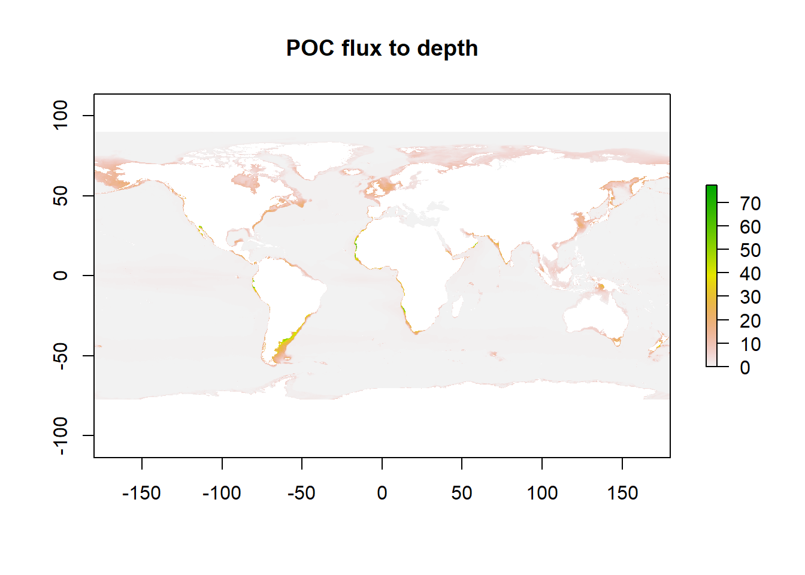
Again, here you can see that (as expected) continental shelves have higher productivity and you can see the slight increases in productivity in temperate latitudes.
prod<-terra::rast(prod) # we convert into a SpatRaster format for the crop() function
prod<-crop(prod, gog_shp)
plot(prod, main="POC flux to depth: Gulf of Guinea")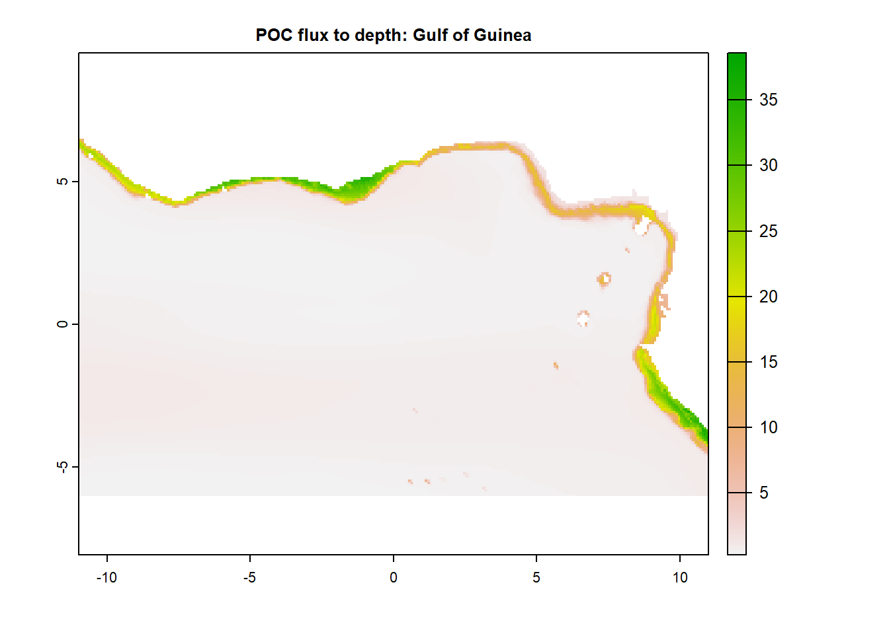
prod<-raster(prod)
terra::writeRaster(prod, filename=(paste0(raw_input_layers_folder, "/Yool_GoG_POC_10km_WGS84.tif")), overwrite=TRUE, format="GTiff")Water mass structure
Some habitat classifications use depth in their models to distinguish between classes (habitats). However, depth is not the biologically relevant variable - it’s often a succinct way of summarizing water mass structure. Whilst this is suitable in some circumstances the depth that different water masses are found is regionally dependent, and therefore a one size fits all approach (e.g. “there’s a difference in communities above and below 300 m”) does not work.
Water mass structure is a function of temperature and salinity. Therefore, we will cluster these variables to identify different bottom water masses in our region of interest.
There are numerous repositories where you can download different datasets for various areas at various resolutions. Depending on your questions, some good examples include:
- Bio-ORACLE
- WorldClim
- European Space Agency
- Global Multi-Resolution Topography Data Synthesis (GMRT)
- Natural Earth
- Ocean Health Index (OHI) global assessments
Here, we use the sdmpredictors library that speaks to several databases to download the bottom temperature and salinity from Bio-ORACLE.
sdm_datasets<-sdmpredictors::list_datasets(terrestrial = FALSE, marine = TRUE)
layers<-sdmpredictors::list_layers(sdm_datasets)%>%
filter(str_detect(layer_url, 'Present.Benthic.Mean.Depth'))%>%
filter(primary_spatial_resolution=="0.25 arcdegree")%>%
filter(version==22)These are the 66 layers available from Bio-ORACLE (version 2.2) for which the values refer to present benthic conditions taken at the mean depth of each cell at a 0.25 arc degree resolution.
We want to download the latest version (BO22) of mean temperature and salinity (tempmean/salinitymean) for the mean bottom depth (bdmean).
Temperature
temp<-load_layers("BO22_tempmean_bdmean", equalarea=FALSE)
tempclass : RasterStack
dimensions : 2160, 4320, 9331200, 1 (nrow, ncol, ncell, nlayers)
resolution : 0.08333333, 0.08333333 (x, y)
extent : -180, 180, -90, 90 (xmin, xmax, ymin, ymax)
crs : +proj=longlat +datum=WGS84 +no_defs
names : BO22_tempmean_bdmean
min values : -1.839894
max values : 31.4447 plot(temp, main="Bottom Temperature")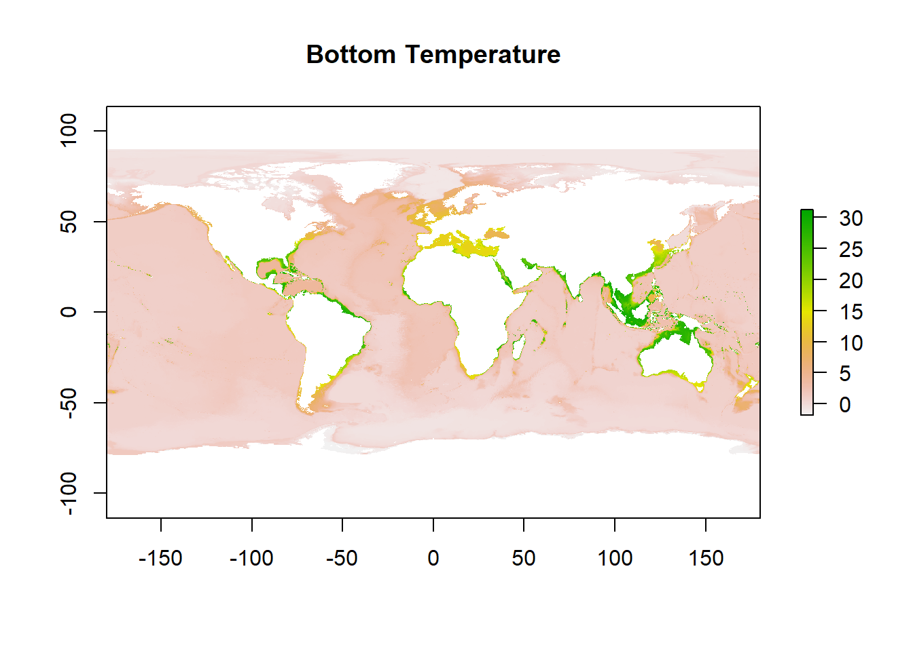
temp<-terra::rast(temp) # we convert into a SpatRaster format for the crop() function
temp<-crop(temp, gog_shp)
plot(temp, main="Bottom Temperature: Gulf of Guinea")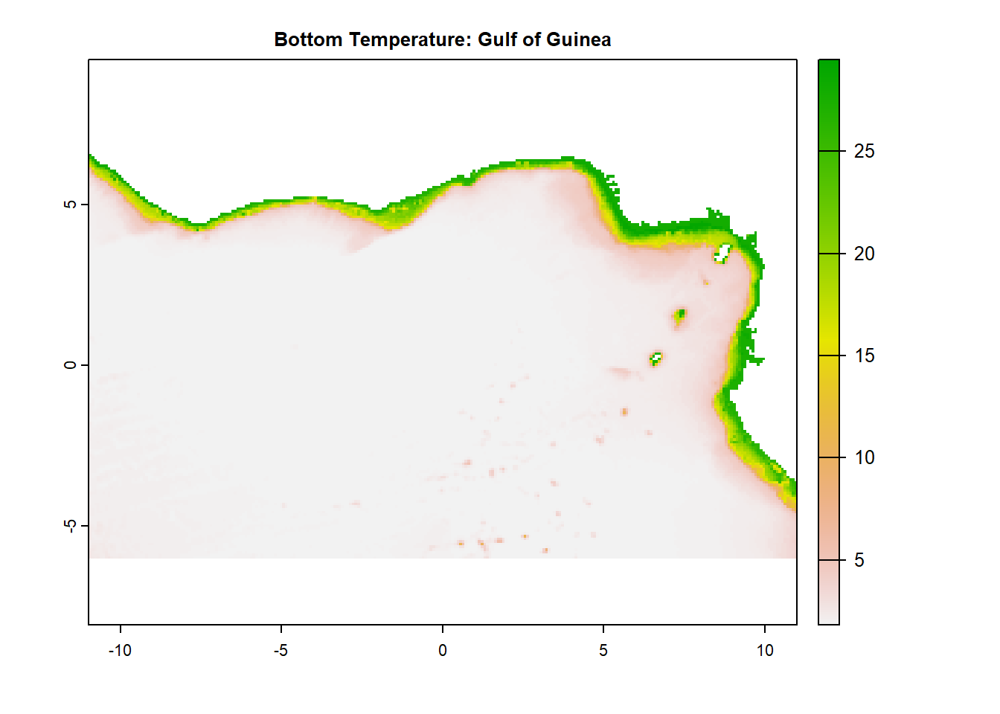
temp<-raster(temp)
terra::writeRaster(temp, filename=(paste0(raw_input_layers_folder, "/BO_GoG_Temp_10km_WGS84.tif")), overwrite=TRUE, format="GTiff")Salinity
sal<-load_layers("BO22_salinitymean_bdmean", equalarea = FALSE)
salclass : RasterStack
dimensions : 2160, 4320, 9331200, 1 (nrow, ncol, ncell, nlayers)
resolution : 0.08333333, 0.08333333 (x, y)
extent : -180, 180, -90, 90 (xmin, xmax, ymin, ymax)
crs : +proj=longlat +datum=WGS84 +no_defs
names : BO22_salinitymean_bdmean
min values : 4.990345
max values : 40.75557 plot(sal, main="Bottom Salinity")
sal<-terra::rast(sal) # we convert into a SpatRaster format for the crop() function
sal<-crop(sal, gog_shp)
plot(sal, main="Bottom Salinity: Gulf of Guinea")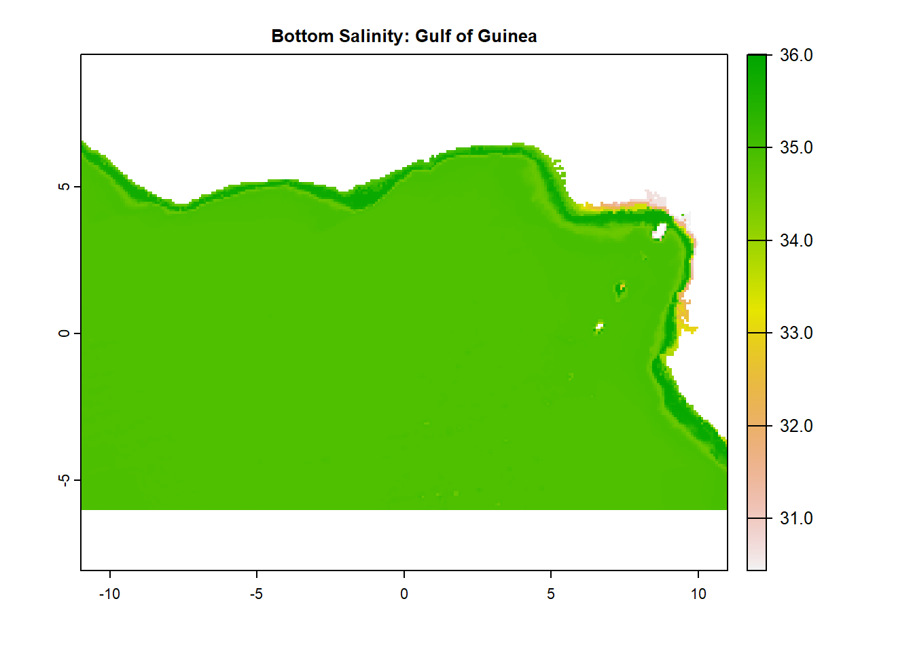
sal<-raster(sal)
terra::writeRaster(sal, filename=(paste0(raw_input_layers_folder, "/BO_GoG_Sal_10km_WGS84.tif")), overwrite=TRUE, format="GTiff")Biogeography
The final layer we need is biogeography to differentiate between two ‘unconnected’ areas with similar conditions (e.g. the Arctic and the Antarctic).
The datasets we’re using in this demonstrations are low-resolution, global layers. From a global biogeography perspective, the Gulf of Guinea falls entirely within one biogeographic region (e.g. all within the ‘Atlantic’ biogeographic region in our McQuaid et al. (2023) paper). Therefore for this example, we are not going to employ a biogeography layer.
However, were you to be working at a finer scale (and crucially with high-resolution data), you may want to consider employing a biogeography to differentiate between regions. There are plenty of published biogeographies at varying scales. Most of these are heavily influenced by water mass structure. However, the water mass structure boundaries used to develop other biogeographies will not align exactly with your water mass structure boundaries. This mismatch means that were you to import a published biography directly onto your classification, you will end up with high numbers of habitat classes around the ‘joins’ which might throw off your analysis.
To get around this in the McQuaid et al. (2023) paper, we followed the water mass boundaries from our clustered water mass structure input layer (you’ll make this in the step 2 script). For full details on how to develop a biogeography layer from a water mass structure input, please see the McQuaid et al. (2023) paper.